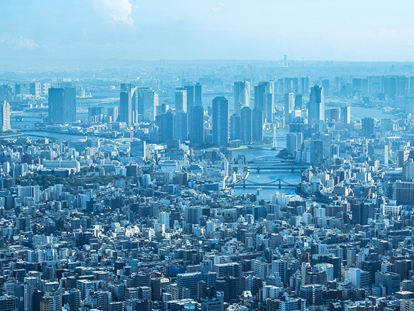

Economy
There are reasons both the Bank of Japan Main Office and the Tokyo Stock Exchange are in such a small area. Nihonbashi has served as the core of Japan’s economy for centuries, and the history, culture, and aesthetic of Nihonbashi attract all kinds of businesses today. Foods, crafts, hospitality, IT, finance, you name it. Local businesses that are over a century old and the offices of Japan’s most successful companies in the same block. Sometimes in the same building. The variety and the quality of goods and services have brought Nihonbashi a massive success in tourism for many years as well. The shopping district and all the department stores on the main street are busy with both tourists and locals every day.
Another reason that Nihonbashi is successful in tourism is the public transportation. Nihonbashi is only a 5-minute walk away from Tokyo Station, has 6 separate subway routes within, and offers several exits/entrances to the main toll roads, Metropolitan Expressways. Take a boat from Asakusa or Tsukiji to get to Nihonbashi while enjoying the scenery of Sumida River on your way. You can even take an express bus and head straight to Nihonbashi from either of the international airports near Tokyo. There are also 2 free bus lines sponsored by some of the largest companies in Nihonbashi. You have so many ways to get to and around Nihonbashi.